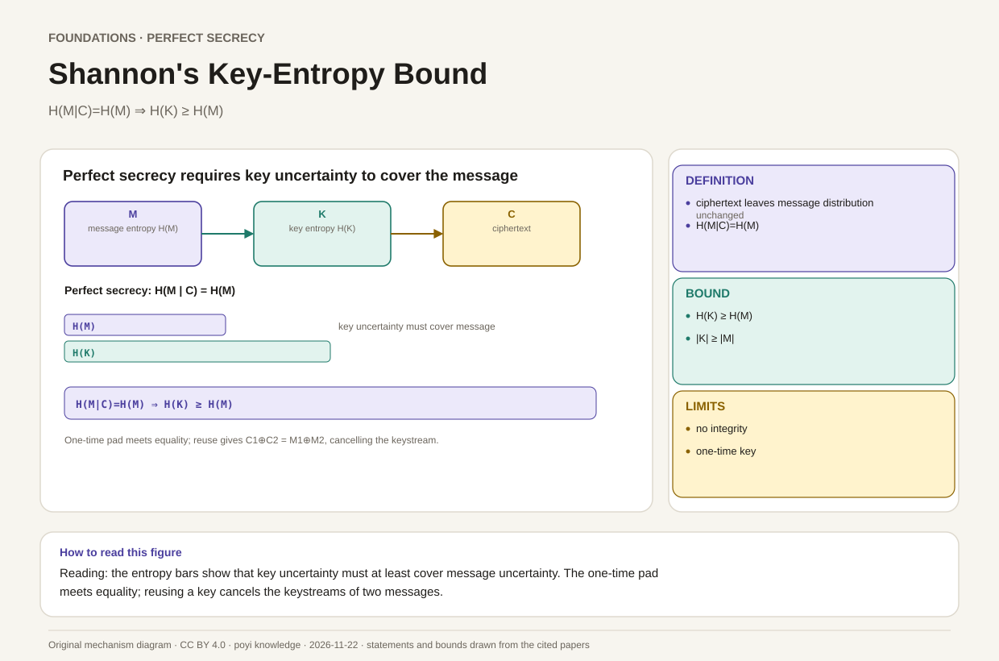
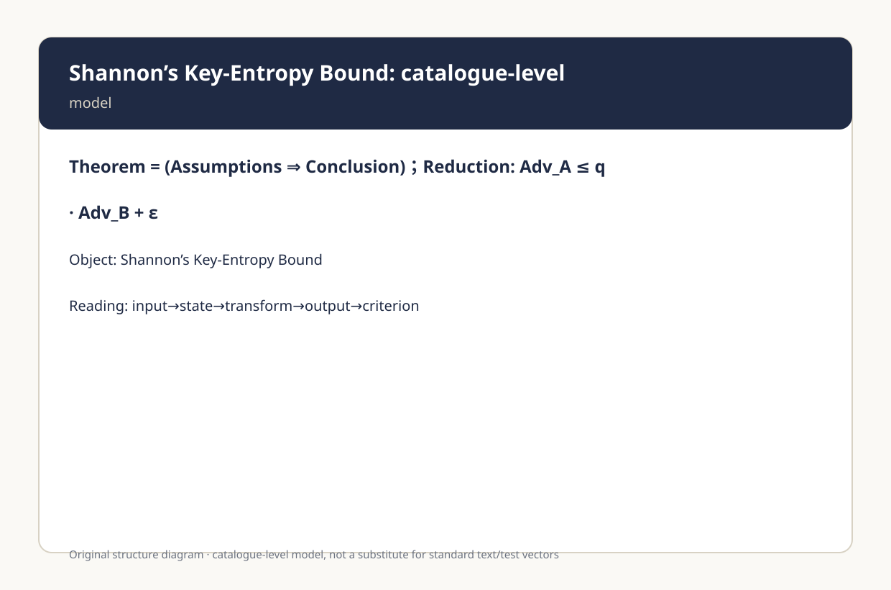

Principles
Theorem: Key Entropy Bound (香农密钥熵下界). ### The definition of perfect secrecy
For every message m, m' and every ciphertext c with P(M=m)>0 and P(M=m')>0, P(C=c | M=m) = P(C=c | M=m'). After seeing the ciphertext, the adversary’s posterior distribution over messages is exactly the prior; equivalently, H(M|C)=H(M). This is information-theoretic secrecy and imposes no bound on the adversary’s computation. ### The key-entropy bound
Shannon proved: if a system achieves perfect secrecy over a finite message space, then H(K) ≥ H(M). Since H(K) ≤ log|K| and H(M) can approach log|M|, the key space must be at least as large as the message space. The one-time pad meets equality: K is as long as M, uniform and independent, C=K⊕M, and K is used once. ### Proof intuition
Fix a ciphertext c. For each possible message m there must be at least one key k mapping m to c. If there are fewer keys than messages, or key entropy is insufficient, some messages become more likely given c and perfect secrecy fails. The formal proof uses key equivocation: with deterministic encryption and independent keys, H(M|C)=H(M)+H(K)−H(C); combined with H(C)≤log|C|, this yields H(K)≥H(M).

Why it matters
It gives a hard answer to “can the key be shorter than the message?”: under perfect secrecy, no. It explains the length cost of the one-time pad and why reusing a stream-cipher nonce/key is catastrophic: XORing two ciphertexts cancels the keystream and leaves the XOR of the two messages.
Modern block ciphers and public-key encryption protect long messages with short keys because security rests on computational assumptions and the adversary is polynomial-time. Shannon’s bound does not apply to computational security; it constrains unconditional, perfect-secrecy systems. Comparing “AES-256 has a 256-bit key” with “the message is 1 GB” confuses two security models.
Perfect secrecy is not integrity. A one-time key can hide a message but cannot stop an adversary from flipping ciphertext bits; active security needs a MAC or authenticated encryption. Shannon’s bound covers confidentiality only.
Applications
- State the goal: perfect secrecy or computational security? 2. For perfect secrecy, compute H(M); key entropy must be at least that value. 3. Check that the key is independent, uniform and one-time; reuse breaks the equality condition. 4. If the message is long, a one-time key does not scale; switch to a computational scheme with explicit assumptions. 5. If integrity is needed, add a MAC; do not claim that OTP provides authentication.
- One-time pad: key length, randomness, distribution and destruction are the entire security boundary. - Information-theoretic key agreement: the agreed key entropy must cover the message entropy to be encrypted. - Teaching: use C1⊕C2=M1⊕M2 to demonstrate the disaster of two-time pads.
A shared name may belong to an algorithm, standard, event, person or term; this entry is responsible only for its catalogue binding and does not absorb adjacent records. If versions, regions or institutions define the name differently, the differences stay side by side.

Limits & attacks
- It applies only to perfect secrecy. Computational schemes can violate H(K)≥H(M) because they do not require an unbounded adversary. 2. The key must be one-time. Reusing the same keystream gives C1⊕C2=M1⊕M2 and perfect secrecy fails immediately. 3. The key must be independent of the message and correctly distributed. Low-entropy, biased or predictable keys do not satisfy the theorem’s premises. 4. It provides no integrity. OTP can be bit-flipped; an adversary can modify it without recovering the plaintext. 5. Finite message space. Infinite message spaces need a finer rate/capacity analysis; the finite equality cannot be applied directly. 6. Key distribution is the practical bottleneck. The theorem assumes shared keys; it does not solve authentication, storage or destruction.
History
Vernam proposed one-time keystream encryption in 1917; Shannon gave the definition of perfect secrecy and the key-entropy bound in his 1945 confidential report and the 1949 paper “Communication Theory of Secrecy Systems”, proving the necessity of a one-time key.
Information-theoretic secrecy remains the language of quantum key distribution, physical-layer security and unconditional-security research. After computational security became dominant, Shannon’s bound serves as a boundary condition: when someone claims “a key shorter than the message, unconditionally secure”, test it against H(K)≥H(M).
Worked example & verification
Formal model and reproduction steps
[\Pr[\mathrm{Bad}_A(\lambda)]\le \varepsilon(\lambda)]
Key Entropy Bound: the registered public parameters, key material or randomness, and message are mapped through the stated transformation to an output checked against the registered criterion. The worked example is a structural reproduction, not a new test vector; parameter ranges, standard versions and implementation details remain source-bound.
References
- Wikipedia search entry for 香农密钥熵下界. https://zh.wikipedia.org/w/index.php?search=%E9%A6%99%E5%86%9C%E5%AF%86%E9%92%A5%E7%86%B5%E4%B8%8B%E7%95%8C
- Handbook of Applied Cryptography (Menezes, van Oorschot, Vanstone). https://www.cacr.math.uwaterloo.ca/hac/